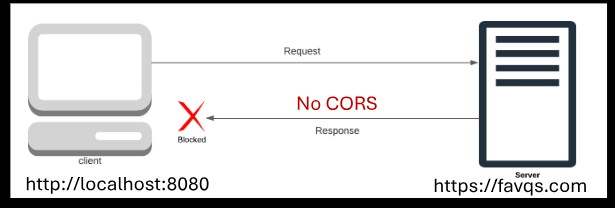
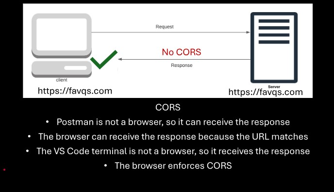
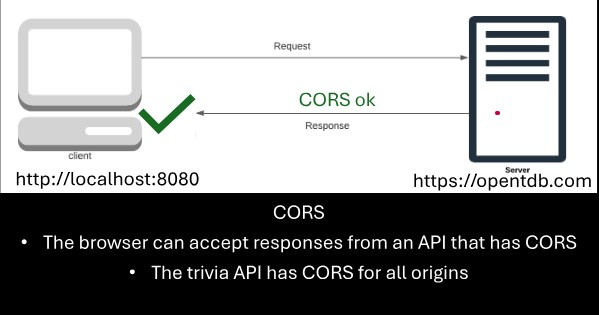
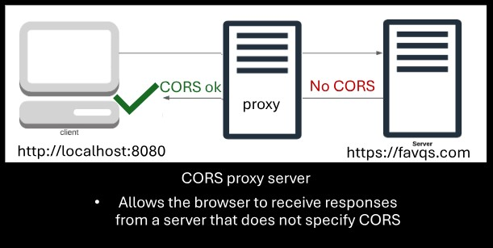
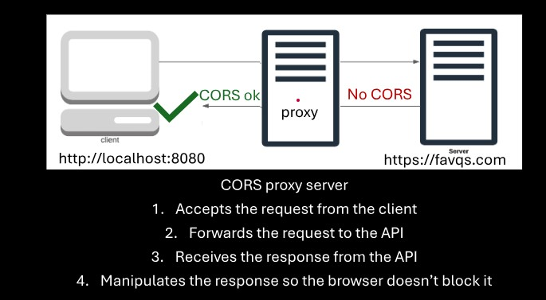
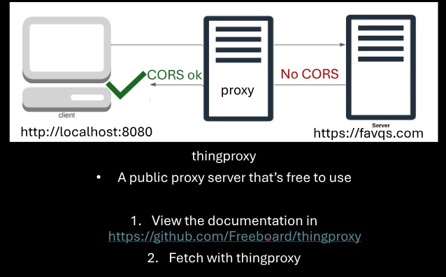
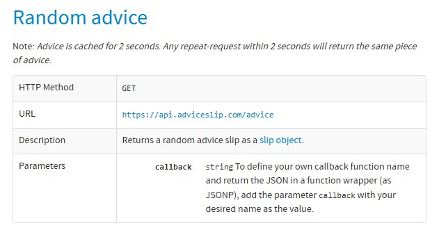

REST API
---------------
REST: Representational State Transfer
API: Application Programming Interface
A set of rules for communicating with the server.
The URL to connect with the server must be properly formed.
REST API analogy
-----------------
1. Customer: Requests a meal from the menu.
2. Waiter: Writes the request in a way the chef understands.
3. Chef: Processes the request by cooking the meal.
4. Waiter: Responds by delivering the meal.
1. Client: Makes a request according to the REST API rules (menu).
2. REST API: Sends the request in a way the server understands.
3. Server: Processes the request.
4. REST API: Delivers the response (stringified object).
`;
output(trivia);
}
Open Trivia Database: free open-source database for trivia questions
https://opentdb.com
The documentation is like the "menu" of data
To request data, form the URL according to the REST API rules
To change the number of questions: https://opentdb.com/api.php?amount=10
Fetch Function
-----------------
const promise = fetch("http://myserver.com");
const promise = fetch("https://opentdb.com/api.php?amount=1");
It sends a request to the URL of the REST API.
It returns a promise.
Its resolve value is not a stringified object.
The resolve value is a special object created by the fetch function.
There's an extra step to accept the response from the REST API.
The Text Method
---------------
const promise = resolveValue.text(); //fetch object
Retrieves the stringified object from the fetch object.
Returns a promise.
Data Extraction
-----------------
function viewResponse(resolveValue){
const response = JSON.parse(resolveValue);
const results = response.results;
const item = results[0];
const question = item.question;
const answer = item.correct_answer;
const incorrects = item.incorrect_answers;
}
Store each property one level at a time until you get the data you need.
Displaying the data
--------------------
const results = response.results;
const trivia = `
${question}
${incorrects[0]}
${incorrects[1]}
${incorrects[2]}
${answer}
`;
output(trivia);
1. Create sample HTML of a trivia question and its answers
2. Converted it to a template string
- by putting back ticks around the sample template and
- storing it in a variable
- move it into javascript file
3. Replaced with variables
4. output to an HTML element
Specifying the Data
--------------------
https://opentdb.com/api.php?amount=10
https://opentdb.com/api_category.php
The REST API documentation teaches how to form the URL to request specific data
Specify amount to get multiple questions
Use different URL to see the list of categories and their ID
Use the API Helper to properly form a URL based on specifications
Paste the URL into the fetch function
Postman
-----------------
https://www.postman.com/downloads/
An application for trying out and testing REST APIs.
Hide Sidebar at bottom left closes the History Panel.
splits the viewing pane
Base URL
---------------
The URL where the REST API is located.
Favorite Quotes API documentation
----------------------------------
https://favqs.com/api/
https://favqs.com/api/qotd
Endpoint
--------------------
/qotd
use filter to find a word
use type to find a tag or author
To use the quotes endpoint, an api key is required
A path that is appended to the base URL
contain data about specific resources
Endpoint for Question of the day
NOTE: If a CORS proxy server is not used there will be an error
API Key Generation
---------------
A unique string or code that grants access to a REST API
To use some REST APIs, an API is required
To use an API key from from FavQs.com:
1. Use the Postman App
2. Auth Tab
3. Change the type to Bearer Token
4. Paste API key into the token box
CORS:Cross Origin Resource Sharing
----------------------------------

Origin: The web address of the client and server
Cross Origin: different origins
Resource: data such as files and stringified objects
Resource Sharing: transmitting the resources
The origin's policy for sharing resources
Servers are supposed to tell browsers their CORS policy
A list of origins that are allowed to access the server
Browsers block the response if the origin is not on the list
----------------------------------

Some servers do not specify their CORS policy
Browsers automatically block responses from different origins
The quotes API doesn't specify a CORS policy
Browsers automatically block responses from the quotes API

CORS Proxy Server
--------------------


1. Accepts the request from the client.
2. Forwards the req to the API.
3. Receives the response from the API.
4. Manipulates the response so the browser doesn't block it.
thingProxy
---------------

A public proxy server that's free to use
1. View the documentation in
https://github.com/Freeboard/thingproxy
2. Fetch with thingproxy
Free APIs
-----------------
https://free-apis.github.io/
A list of free APIs
Interesting APIs I found and like
----------------------------------
1. 
Base URL: https://api.adviceslip.com/
Random Advice: https://api.adviceslip.com/advice
Daily Advice: https://api.adviceslip.com/daily_adviceslip.rss

 1. Client: Makes a request according to the REST API rules (menu).
2. REST API: Sends the request in a way the server understands.
3. Server: Processes the request.
4. REST API: Delivers the response (stringified object).
1. Client: Makes a request according to the REST API rules (menu).
2. REST API: Sends the request in a way the server understands.
3. Server: Processes the request.
4. REST API: Delivers the response (stringified object).